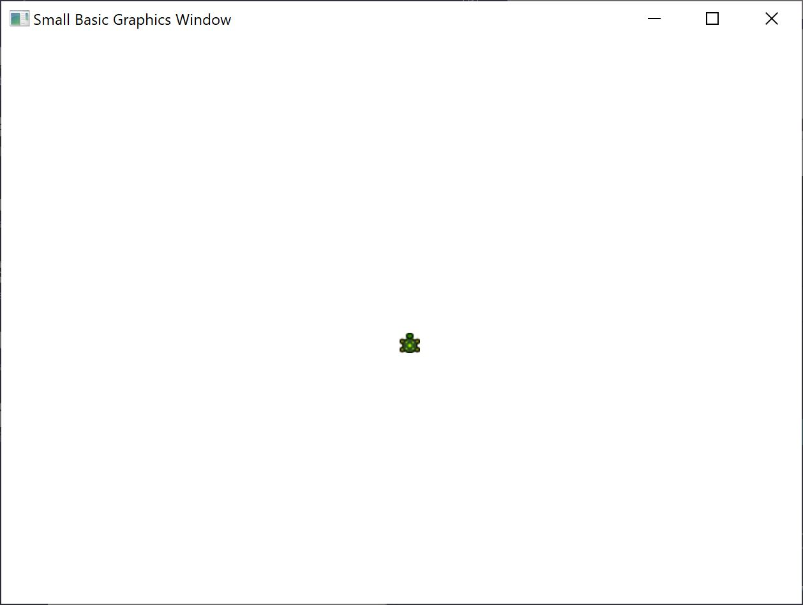
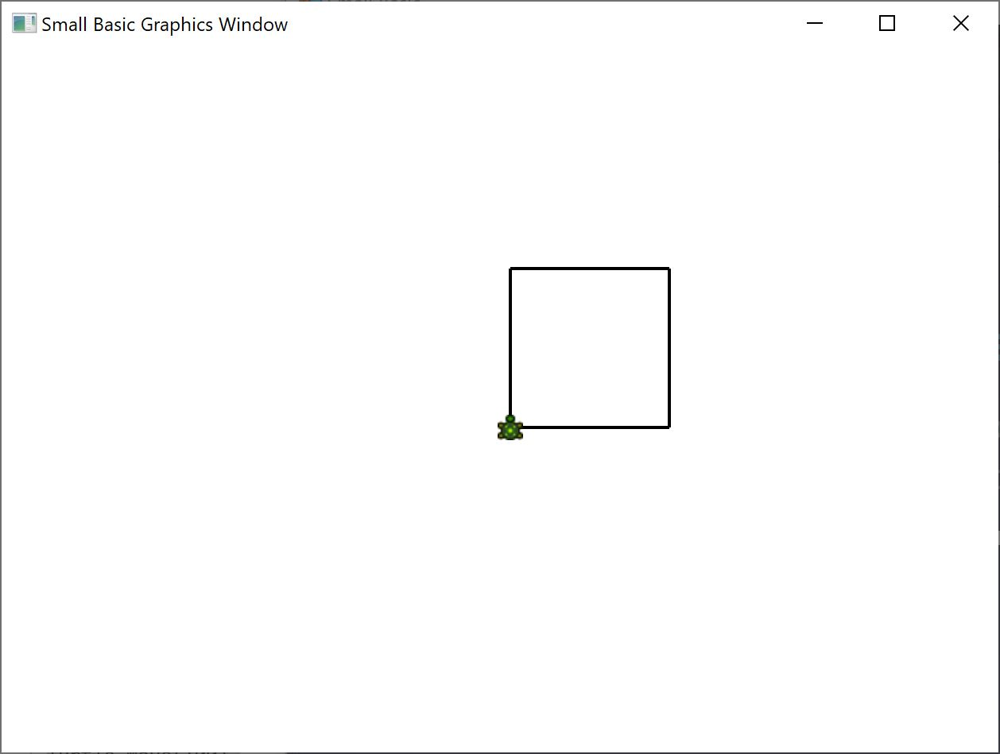
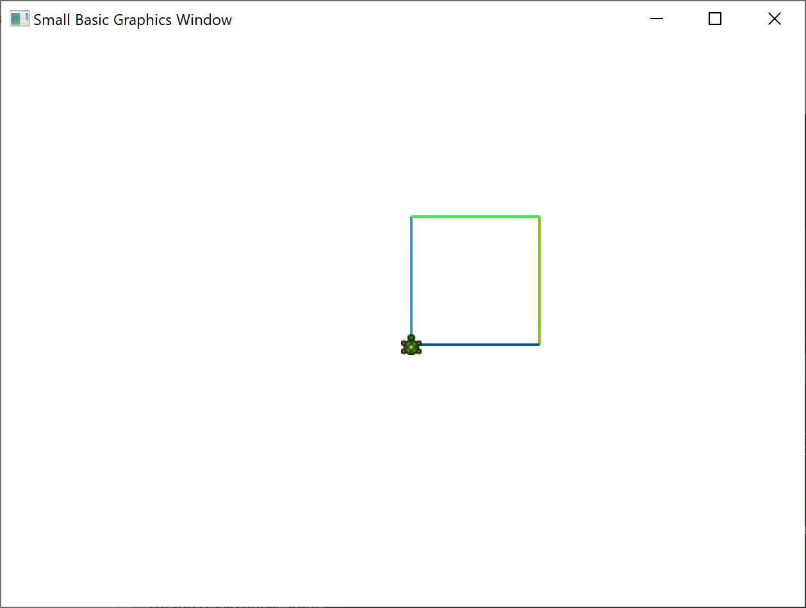
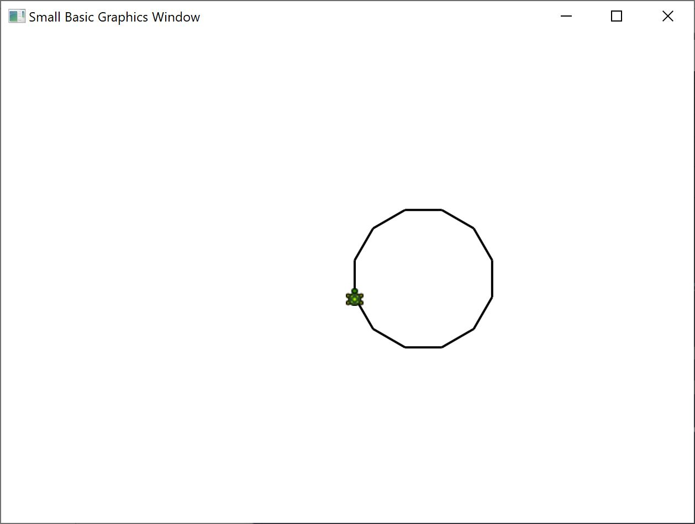
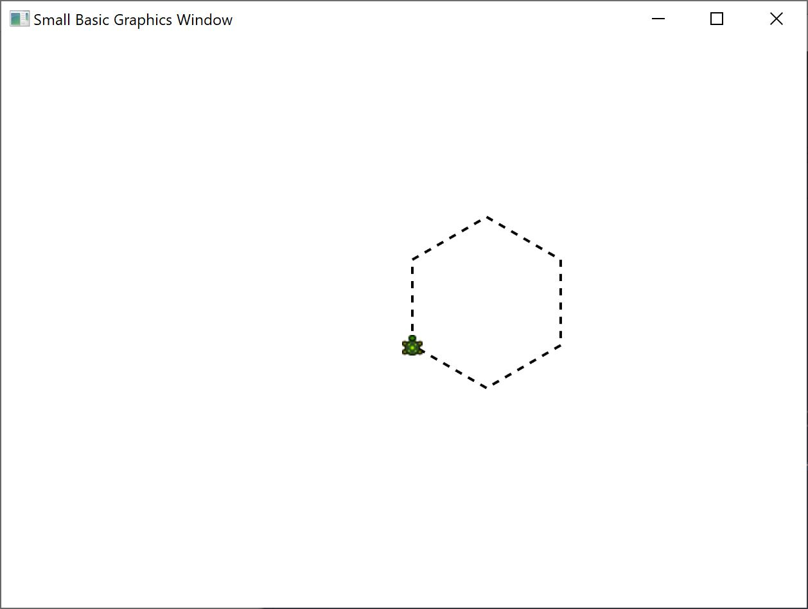

In the 1970s, there was a very simple but powerful programming language, called Logo that was used by a few researchers. This was until someone added what is called “Turtle Graphics” to the language and made available a “Turtle” that was visible on the screen and responded to commands like Move Forward, Turn Right, Turn Left, etc. Using the Turtle, people were able to draw interesting shapes on the screen. This made the language immediately accessible and appealing to people of all ages, and was largely responsible for its wild popularity in the 1980s.
Small Basic comes with a Turtle object with many commands that can be called from within Small Basic programs. In this chapter, we’ll use the Turtle to draw graphics on the screen.
To begin with, we need to make the Turtle visible on the screen. This can be achieved by a simple one line program.
Turtle.Show()When you run this program you’ll notice a white window, just like the one we saw in the previous chapter, except this one has a Turtle in the center. It is this Turtle that is going to follow our instructions and draw whatever we ask it to.

Figure 8.1 - Turtle is visible
One of the instructions that the Turtle understands is Move. This operation takes a number as input. This number tells the Turtle how far to move. Say, in the example below, we’ll ask the Turtle to move 100 pixels.
Turtle.Move(100)When you run this program, you can actually see the turtle move slowly a 100 pixels upwards. As it moves, you’ll also notice it drawing a line behind it. When the Turtle has finished moving, the result will look something like the figure below.
Note: When using operations on the Turtle, it is not necessary to call Show(). The Turtle will be automatically made visible whenever any Turtle operation is performed.
A square has four sides, two vertical and two horizontal. In order to draw a square we need to be able to make the Turtle draw a line, turn right and draw another line and continue this until all four sides are finished. If we translated this to a program, here’s how it would look.
Turtle.Move(100)
Turtle.TurnRight()
Turtle.Move(100)
Turtle.TurnRight()
Turtle.Move(100)
Turtle.TurnRight()
Turtle.Move(100)
Turtle.TurnRight()
When you run this program, you can see the Turtle drawing a square, one line at a time, and the result looks like the figure below.

Figure 8.2 - Turtle drawing a square
It will be interesting to note that we’re issuing the same two instructions over and over – four times precisely. And we’ve already learnt that such repetitive commands can be executed using loops. So, if we take the program above and modify it to use the For..EndFor loop, we’ll end up with a much simpler program.
For i = 1 To 4
Turtle.Move(100)
Turtle.TurnRight()
EndFor
The Turtle draws on the exact same GraphicsWindow that we saw in the previous chapter. This means that all the operations that we learned in the previous chapter are still valid here. For instance, the following program will draw the square with each side in a different color.
For i = 1 To 4
GraphicsWindow.PenColor = GraphicsWindow.GetRandomColor()
Turtle.Move(100)
Turtle.TurnRight()
EndFor

Figure 8.3 - Changing Colors
The Turtle, in addition to the TurnRight and TurnLeft operations, has a Turn operation. This operation takes one input which specifies the angle of rotation. Using this operation, it is possible to draw any sided polygon. The following program draws a hexagon (a six-sided polygon).
For i = 1 To 6
Turtle.Move(100)
Turtle.Turn(60)
EndFor
Try this program out to see if it really draws a hexagon. Observe that since the angle between the sides is 60 degrees, we use Turn(60). For such a polygon, whose sides are all equal, the angle between the sides can be easily obtained by dividing 360 by the number of sides. Armed with this information and using variables, we can write a pretty generic program that can draw any sided polygon.
sides = 12
length = 400 / sides
angle = 360 / sides
For i = 1 To sides
Turtle.Move(length)
Turtle.Turn(angle)
EndFor
Using this program, you can draw any polygon by just modifying the sides variable. Putting 4 here would give us the Square we started with. Putting a sufficiently large value, say 50 would make the result indistinguishable from a circle.

Figure 8.4 - Drawing a 12 sided polygon
Using the technique we just learned, we can make the Turtle draw multiple circles each time with a little shift resulting in an interesting output.
sides = 50
length = 400 / sides
angle = 360 / sides
Turtle.Speed = 9
For j = 1 To 20
For i = 1 To sides
Turtle.Move(length)
Turtle.Turn(angle)
EndFor
Turtle.Turn(18)
EndFor
The program above has two For..EndFor loops, one within the other. The inner loop (i = 1 to sides) is similar to the polygon program and is responsible for drawing a circle. The outer loop (j = 1 to 20) is responsible for turning the Turtle by a small bit for every circle that is drawn. This tells the Turtle to draw 20 circles. When put together, this program results in a very interesting pattern, like the one shown below.
Note: In the program above, we have made the Turtle go faster by setting the Speed to 9. You can set this property to any value between 1 and 10 to make the Turtle go as fast as you want.
You can make the turtle not draw by calling the PenUp operation. This allows you to move the turtle to anywhere on the screen without drawing a line. Calling PenDown will make the turtle draw again. This can be used to get some interesting effects, like say, dotted lines. Here’s a program that uses this to draw a dotted line polygon.
sides = 6
length = 400 / sides
angle = 360 / sides
For i = 1 To sides
For j = 1 To 6
Turtle.Move(length / 12)
Turtle.PenUp()
Turtle.Move(length / 12)
Turtle.PenDown()
EndFor
Turtle.Turn(angle)
EndFor
Again, this program has two loops. The inner loop draws a single dotted line, while the outer loop specifies how many lines to draw. In our example, we used 6 for the sides variable and hence we got a dotted line hexagon, as below.

Figure 8.5 - Using PenUp and PenDown